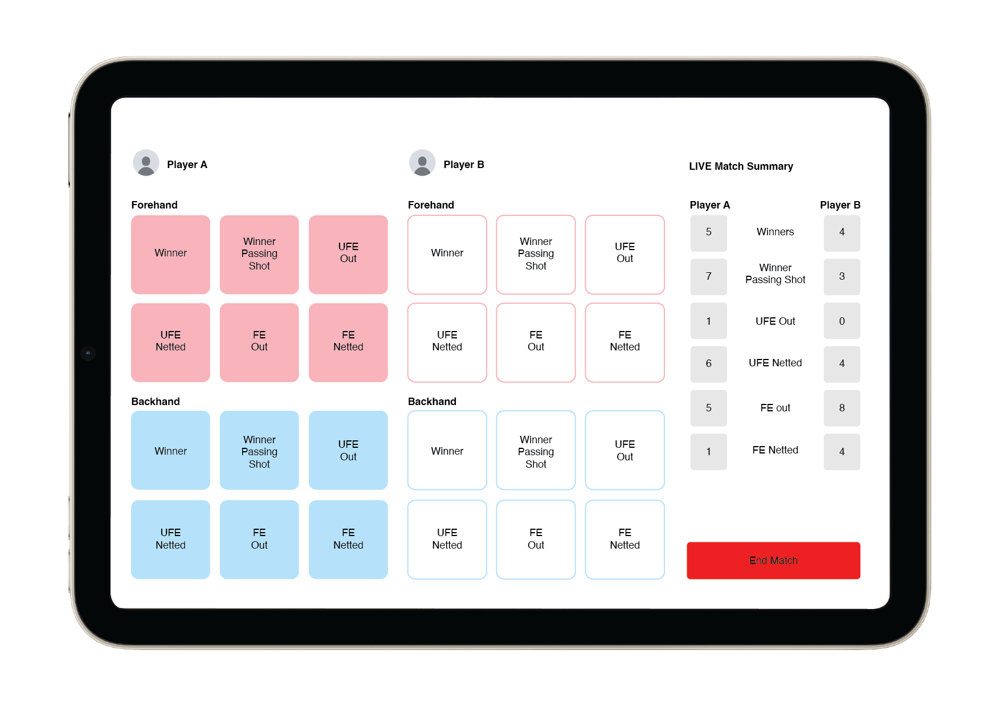
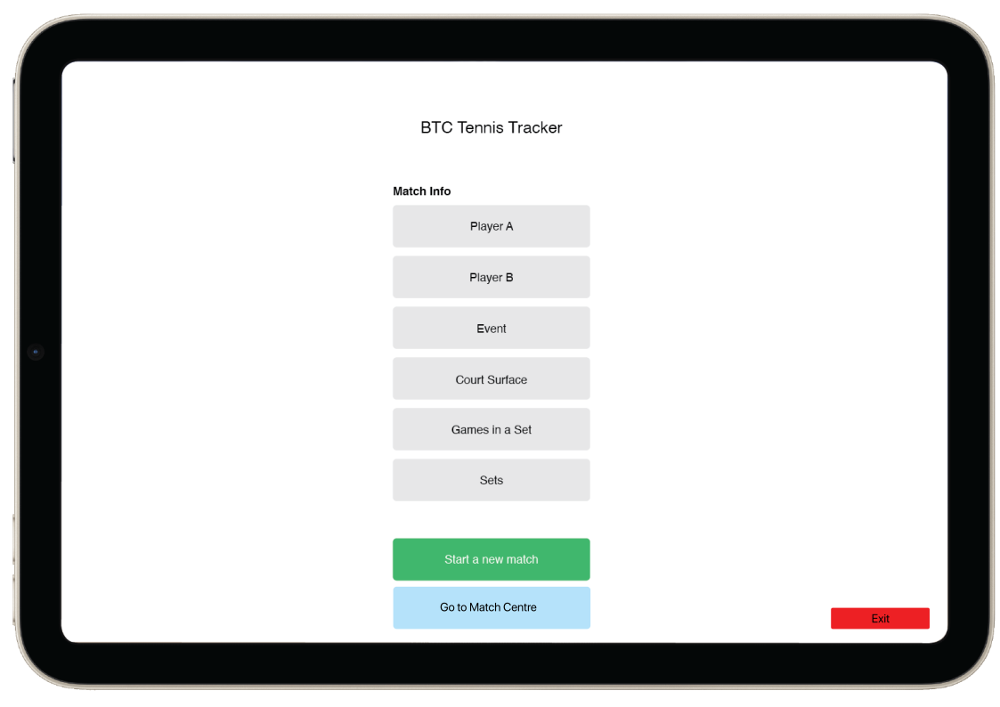
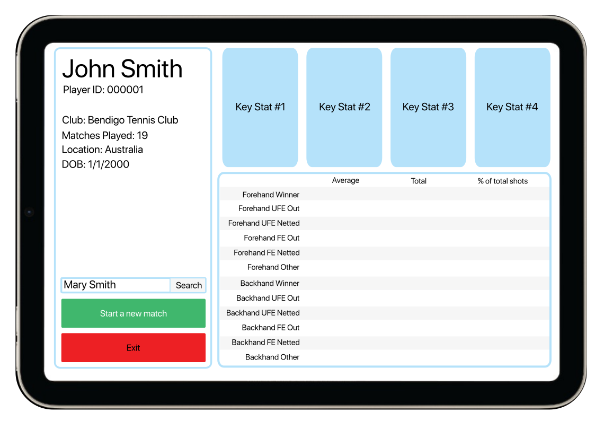

ShotSpot is a tennis match shot-tagging application I designed for my Year 12 VCE Software Development School-Assessed Task in 2023 at Catherine McAuley College Bendigo. The user watches a replay of a match and taps a button for how each point ended — a forehand winner, a backhand unforced error into the net, and so on — and the program collates those data points into a match summary and a running player profile, so players and coaches can see which parts of their game are costing them points.
This page covers the first half of the SAT: the analysis, the software requirements specification and the design folio. The working program is built in the following unit; what is shown here is the planning and design that it is built from.
My client was the Bendigo Tennis Club, which I worked with through its president, Damien Saunder. The club wanted something that recreational and club players — from C Grade up to A Grade — could use without much computer experience, since a survey I ran through the club's WhatsApp group (18 responses) showed that a perceived lack of computer skills was the main thing putting members off using analysis tools at all. Almost everyone surveyed played at least once a week, so the app needed to suit regular use.
To gather requirements I used three data collection methods:
I compared the waterfall, spiral and agile models. Waterfall was too rigid for a project this long and gave the client too few chances to feed back; spiral was heavier than a project this size warranted and its open-ended number of phases made the deadline hard to plan against. I chose an agile model and split the program into three independently buildable pieces — the loading screen, the input screen and the match database screen — so I could get working parts in front of the client early and adjust as I went.
The SRS set the scope. The prototype targets a Windows Forms app written in VB.NET on my school laptop, with the form canvas sized to an iPad screen because the intended final environment is an iPad (7th generation or later) with touch input. Data is stored locally in XML files, with no network dependency.
The functional requirements the program has to meet:
The main non-functional requirements were fast, reliable reading and writing of the stats files; per-player privacy so one player cannot look up another's stats; and a user-friendly interface with large buttons, tooltips and a help menu. Scope was kept deliberately tight with a MoSCoW list — file encryption and multi-platform support were explicitly ruled out for the time available.
My accessibility and usability research drove most of the interface decisions. Square buttons beat circular ones because a larger click target is the difference between a hit and a mis-tap when you are logging shots quickly. Large text and strong colour differentiation help visually impaired users. Forehand and backhand shots are colour-coded (pink and blue), Player A's buttons are filled and Player B's are outlined, and every screen shares one colour scheme and typeface so the user is not disoriented moving between them. The aim was the fewest buttons and words that still make each action obvious.


The folio also included a data dictionary and pseudocode for the core
routines — starting a new match, adding a player, writing a tagged
shot into the match file while updating the live counts, and rebuilding
a player's averages and totals by reading back across every match file.
The data model is three objects: player, match
and shots, persisted as players.xml and one
matchID.xml file per match.
The output of this half of the SAT is a complete, client-validated plan: a justified development model and Gantt chart, three sets of collected data, a full SRS with context and data-flow diagrams and use cases, and a design folio with mockups for all three screens signed off by the client. That specification is what the build phase works from.